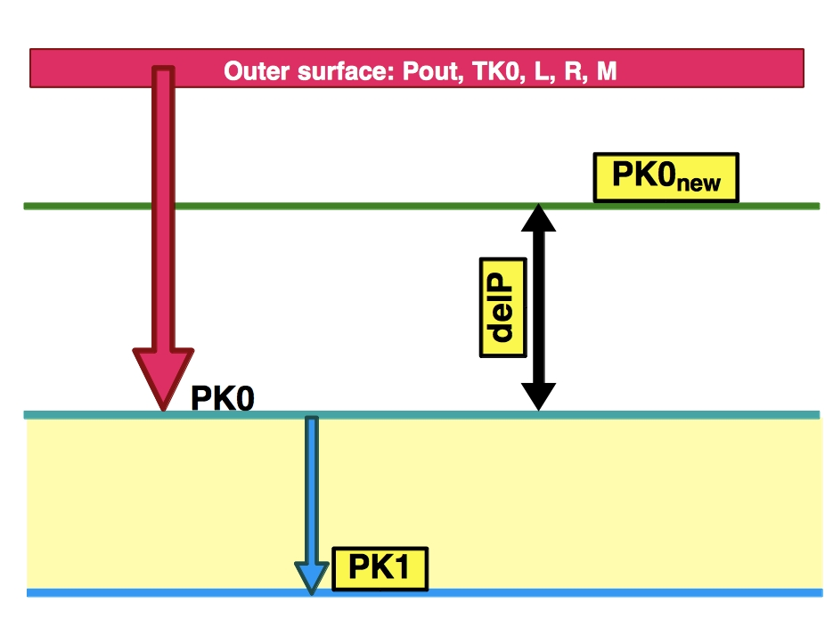
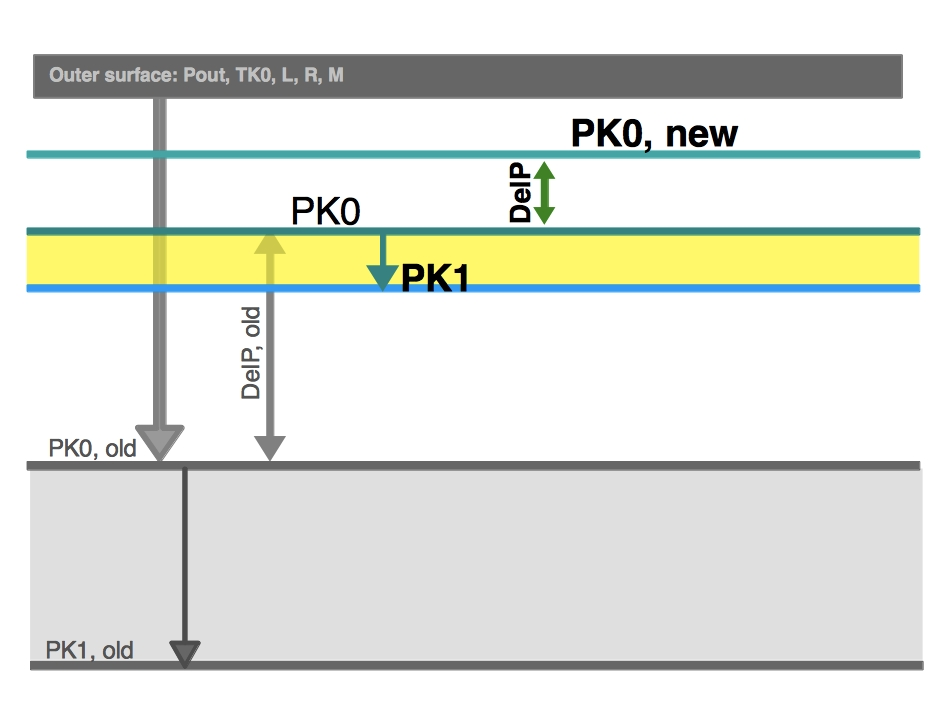
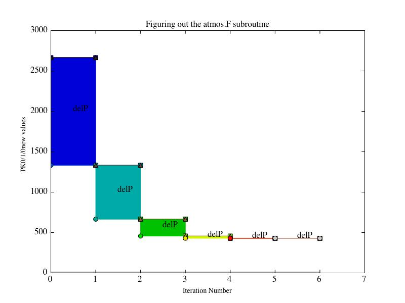

Date & Time: May 8 2012
Location: Home
Computing context: Macho Mac: /Desktop/Research/BodenheimerCode/workingdir/UnalteredCode/
Today's paper:
Still need to read the Ida & Lin paper
Still need to find the Bodenheimer & Laughlin 1997 paper
Scripts/Software created today:
Useful computer stuff figured out today:
Continuing from last time:
To Do Today (Science-wise):
Look into adding the atmospheric calculations that are in TheCode.f here into my C++ code.
NOTE
TO SELF: scan in my notes/calculations on this. Went over both the
textbook and Peter's code in atmos.F to try to figure out what's
going on there, esp. with respect to determining the outer
P/T/rho/kappa values from which to start the integration inwards
through the atmosphere in terms/steps of tau (optical depth).
Done. (See 'calculations_from_May_7.pdf' for my by-hand scratch
work on this.)
Now,
moving on to modify the atmos.F subroutine of TheCode.f (with or
without fusion, doesn't really matter) to print out
P/T/R/M/L/rho/kappa values during that initial outer-value
iterative loop. Done and done. This compiled version of
thecode.f is 'atmosProbe', and the inputs/outputs files are
atmosProbe.start/txt/mod. The file containing only the print
statements from the atmos.F subroutine is 'debugAtmosProbe.txt'.
Still need to figure out, based on the info/outputs from the two points above, why that subroutine (esp. the outermost atmos values) is coded the way it is.
Note to self: scan in my handwritten calculations from today, and include them as a .pdf -->HERE<--
Made a sort-of python file/code to plot the stuff in Figure3: atmosProbing.py. It won't run if you type "run atmosProbing.py", but it works fine if you just copy and paste the code directly in at the ipython prompt.

Figure
1: A diagram of what happens during the first pass through the
initial/outer conds. determining for-loop in the atmos.F
subroutine. Only the variables whose names are boxed in yellow
determine whether or not the outer boundary conds. calculation has
"converged" or not.

Figure
2: An illustration of how the for-loop mentioned in Figure 1
proceeds during its second pass (and by extension, through all
subsequent passes).

Figure
3: A plot of the actual PK0, PK1, PK0new, and delP values generated
by the atmos.F subroutine on a single run of pmsstar1.start initial
conditions. Notice that the delP values, at least, get noticeably
geometrically smaller with each iteration. The Pout value is also
included in this graph, but is hard to see because it's down at
P~10.
Write
up a small manifesto on 'How to get TheCode.f to converge, esp. for
these lower-mass systems,' and post it on the blog.
Write up a little guide for myself on how to manage, start, etc. the bitbucket repositories (using git on my local machine)-- how NOT to accidentally erase an entire directory again.
Compare my ~1Mjup test cases to the Guillot 99 model I had been using as an input to my code.
Go over my code, and remind myself what the existing issues were with it when I last stopped
Make list of things to fix in my code
Look into adding the atmospheric calculations that are in TheCode.f here into my C++ code. Go over the section on the atmos. outer boundary conds. in the chapter from Peter's book. Note: you should have a scanned copy of that somewhere in one of your emails. Find it and download it onto this machine. (Can also annotate that pdf on this local machine, too...)
Start fixing/testing my C++ code...
Computing Housekeeping & Miscellanea:
Administrivia:
Collect
the 'can you make it to my qual?' email responses, and use them to
figure out when my qual should be
Send out email to the qual committee suspects to ask if they could,
instead, do the qual later in the week of June 25 (after...
Wednesday? of that week?)
Fill out the purchase order form
Go on Amazon and get prices/quotes for the equipment I need:
Replacement laptop battery
A lock for the laptop
A 1-Terabyte external hard drive
Print out the Amazon listings I find for the equipments and staple it to the PO.
Upload my group meeting presentation and advisor meeting notes to the wordpress blog
Next steps: